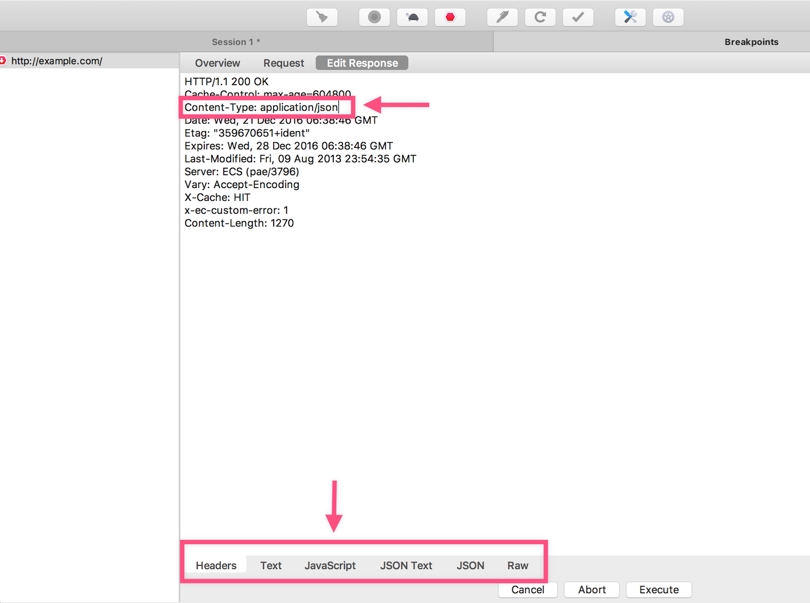
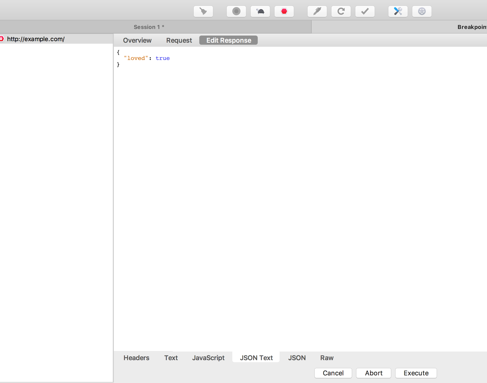

修改网络请求
很多时候由于后台的接口没完成，我们需要等待。这个时候，我们就可以利用 Charles 修改请求的响应正文，返回我们想要的数据。
接下来，我们会以 example.com 为例，让他返回一个 JSON ，而不是默认的 HTML 。
{
"loved": true
}
设断点
在左侧栏，右击「请求域名」-> Breakpoints && 顶部工具栏 Enable Breakpoints

此时，我们向 example.com 发起一个 HTTP 请求：
curl http://example.com --proxy 127.0.0.1:8888
Charles 就会捕捉到，呈现一下页面：

修改请求正文
点击 Edit Request ：

在这里，你可以修改请求正文，比如加个请求头部，修改请求方法 GET 为 POST ……
修改完后，点击底部的 Execute ，发送请求。接下来会看到默认的响应正文：

修改响应正文
我们的目的是把他修改为 JSON（把 Content-Type 修改为 application/json ）:

点击 Edit Response ：

最后点击底部的 Execute ，可以看到最后的响应被修改为了如下：

curl 返回的结果：

总结
综上，我们不难得到：
利用 Charles ，我们可以很好地控制 HTTP 请求和对应的响应，这样一来，我们测试以及调试就变得简单得多了，比如测试某些特殊值的时候，就不需要后台修改数据库。